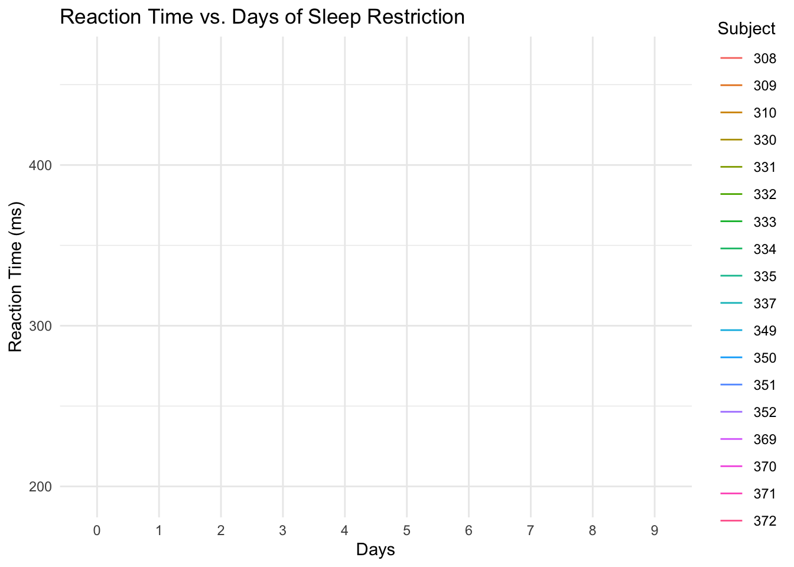
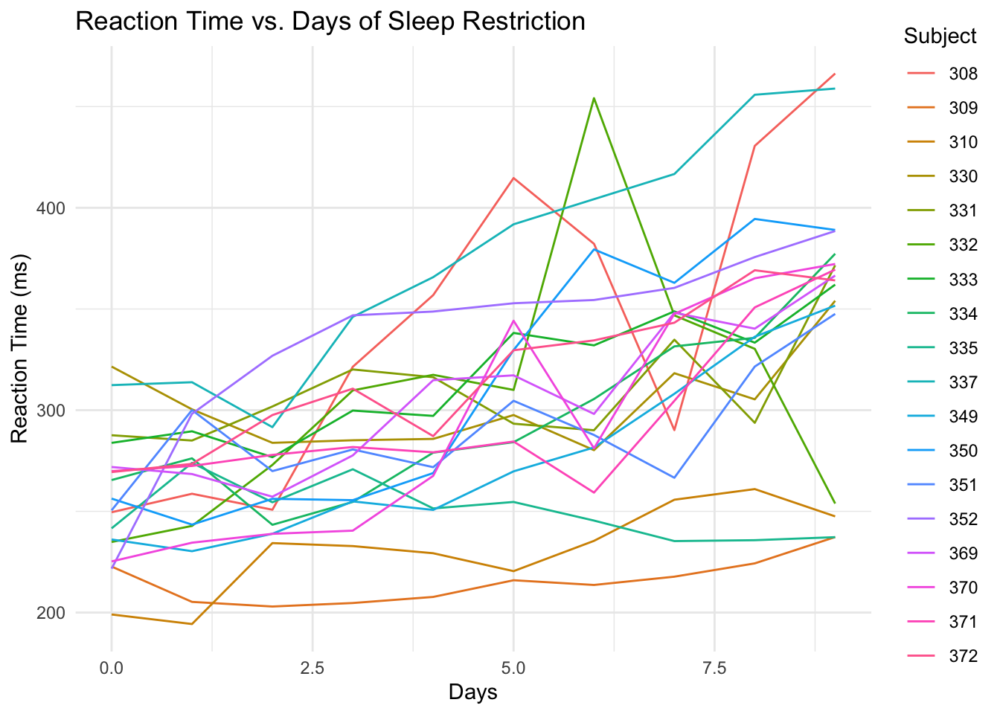
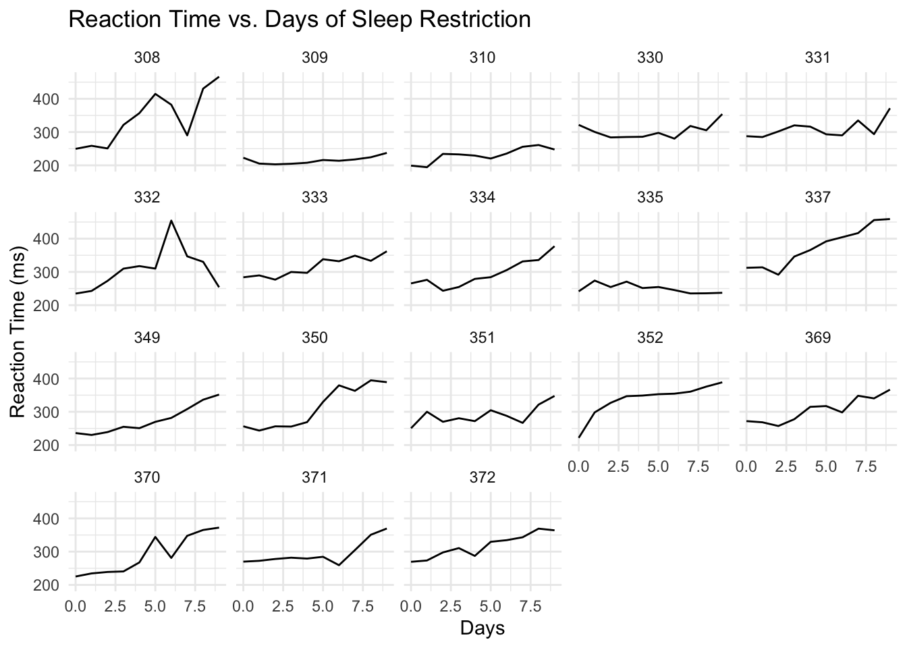
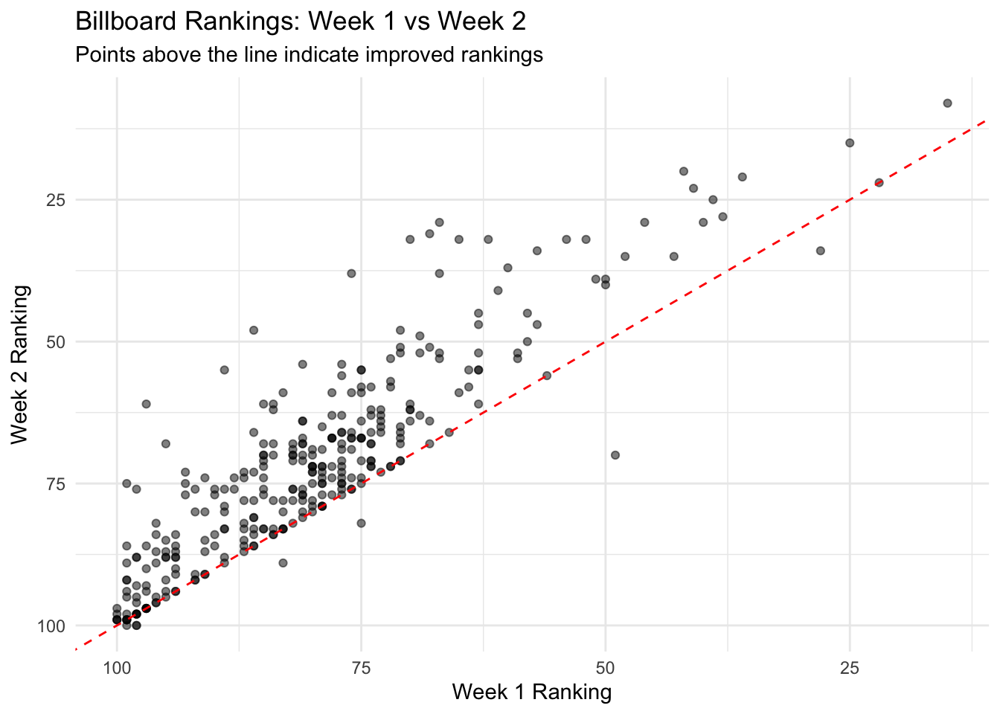
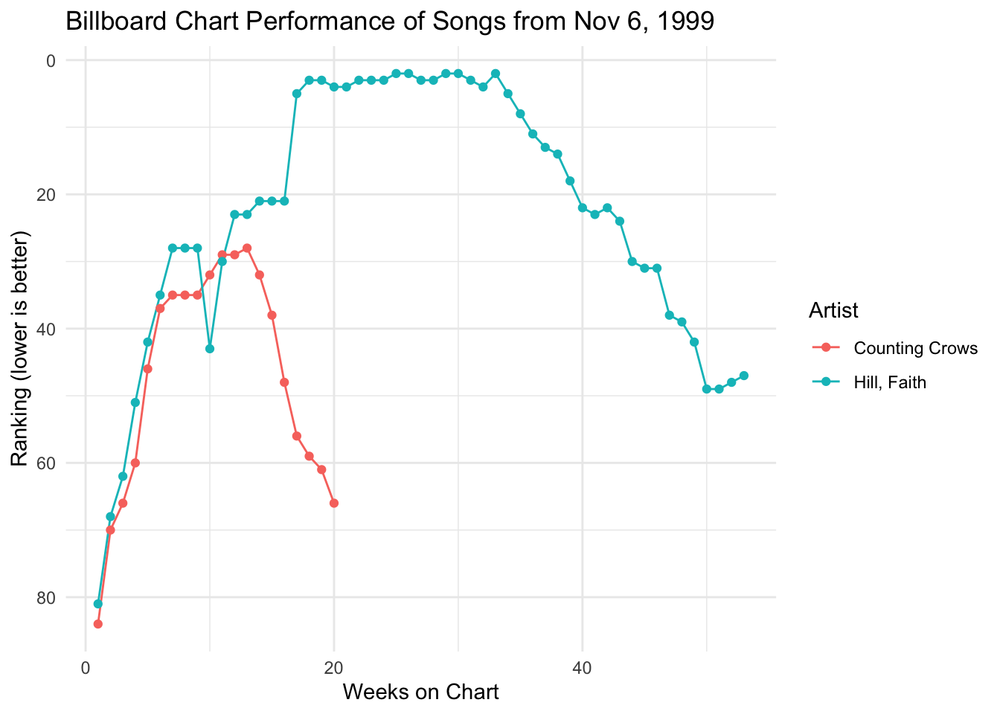
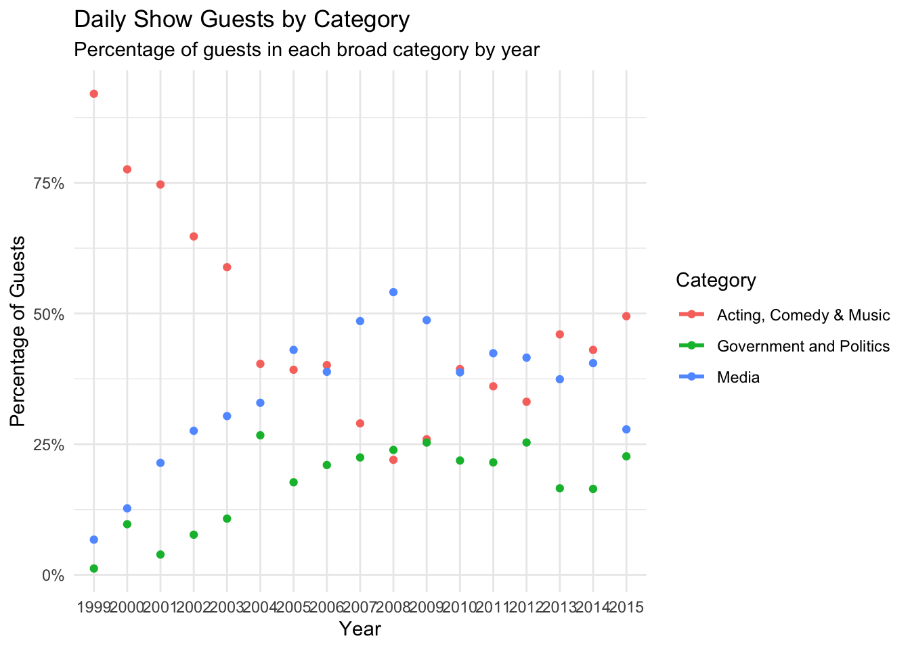

Rows: 344 Columns: 8
── Column specification ────────────────────────────────────────────────────────
Delimiter: ","
chr (3): species, island, sex
dbl (5): bill_length_mm, bill_depth_mm, flipper_length_mm, body_mass_g, year
ℹ Use `spec()` to retrieve the full column specification for this data.
ℹ Specify the column types or set `show_col_types = FALSE` to quiet this message.
Tally up the number of male/female penguins by species in 2 ways:
# Using count()penguins |>count(species, sex)
# A tibble: 8 × 3
species sex n
<chr> <chr> <int>
1 Adelie female 73
2 Adelie male 73
3 Adelie <NA> 6
4 Chinstrap female 34
5 Chinstrap male 34
6 Gentoo female 58
7 Gentoo male 61
8 Gentoo <NA> 5
# Using group_by() and summarize()penguins |>group_by(species, sex) |>summarize(count =n(), .groups ='drop')
# A tibble: 8 × 3
species sex count
<chr> <chr> <int>
1 Adelie female 73
2 Adelie male 73
3 Adelie <NA> 6
4 Chinstrap female 34
5 Chinstrap male 34
6 Gentoo female 58
7 Gentoo male 61
8 Gentoo <NA> 5
Define a new column that includes the proportion or relative frequencies of male/female penguins in each species.
We can’t do this by adjusting our count() code, but can adjust the group_by() and summarize() code since it’s still tracking the group categories in the background.
# Does the order of species and sex in group_by() matter?# Let's try with species firstpenguins |>group_by(species, sex) |>summarize(count =n(), .groups ='drop') |>group_by(species) |>mutate(proportion = count /sum(count))
# A tibble: 8 × 4
# Groups: species [3]
species sex count proportion
<chr> <chr> <int> <dbl>
1 Adelie female 73 0.480
2 Adelie male 73 0.480
3 Adelie <NA> 6 0.0395
4 Chinstrap female 34 0.5
5 Chinstrap male 34 0.5
6 Gentoo female 58 0.468
7 Gentoo male 61 0.492
8 Gentoo <NA> 5 0.0403
# Now try with sex firstpenguins |>group_by(sex, species) |>summarize(count =n(), .groups ='drop') |>group_by(species) |>mutate(proportion = count /sum(count))
# A tibble: 8 × 4
# Groups: species [3]
sex species count proportion
<chr> <chr> <int> <dbl>
1 female Adelie 73 0.480
2 female Chinstrap 34 0.5
3 female Gentoo 58 0.468
4 male Adelie 73 0.480
5 male Chinstrap 34 0.5
6 male Gentoo 61 0.492
7 <NA> Adelie 6 0.0395
8 <NA> Gentoo 5 0.0403
Example 2: New data
What will the following code do? Think about it before running.
`summarise()` has grouped output by 'species'. You can override using the
`.groups` argument.
penguin_avg
# A tibble: 6 × 3
# Groups: species [3]
species sex avg_body_mass
<chr> <chr> <dbl>
1 Adelie female 3369.
2 Adelie male 4043.
3 Chinstrap female 3527.
4 Chinstrap male 3939.
5 Gentoo female 4680.
6 Gentoo male 5485.
Example 3: units of observation
To get the information on average body masses, we reshaped our original data.
Did the reshaping process change the units of observation?
# Units of observation = individual penguinshead(penguins)
# A tibble: 6 × 8
species island bill_length_mm bill_depth_mm flipper_length_mm body_mass_g
<chr> <chr> <dbl> <dbl> <dbl> <dbl>
1 Adelie Torgersen 39.1 18.7 181 3750
2 Adelie Torgersen 39.5 17.4 186 3800
3 Adelie Torgersen 40.3 18 195 3250
4 Adelie Torgersen NA NA NA NA
5 Adelie Torgersen 36.7 19.3 193 3450
6 Adelie Torgersen 39.3 20.6 190 3650
# ℹ 2 more variables: sex <chr>, year <dbl>
# Units of observation = species/sex combinationshead(penguin_avg)
# A tibble: 6 × 3
# Groups: species [3]
species sex avg_body_mass
<chr> <chr> <dbl>
1 Adelie female 3369.
2 Adelie male 4043.
3 Chinstrap female 3527.
4 Chinstrap male 3939.
5 Gentoo female 4680.
6 Gentoo male 5485.
Did the reshaping process result in any information loss from the original data?
Yes, we’ve lost individual penguin information. We now only have aggregate data (averages) for each species/sex combination.
10.2 Reshaping Data
There are two general types of reshaped data:
aggregate data For example, using group_by() with summarize() gains aggregate information about our observations but loses data on individual observations.
raw data, reshaped We often want to retain all information on individual observations, but need to reshape it in order to perform the task at hand.
Example 4: reshape it with your mind
Let’s calculate the difference in average body mass, male vs female, for each species. Since penguin_avg is small, we could do these calculations by hand. But this doesn’t scale up to bigger datasets.
penguin_avg
# A tibble: 6 × 3
# Groups: species [3]
species sex avg_body_mass
<chr> <chr> <dbl>
1 Adelie female 3369.
2 Adelie male 4043.
3 Chinstrap female 3527.
4 Chinstrap male 3939.
5 Gentoo female 4680.
6 Gentoo male 5485.
Sketch out (on paper, in your head, anything) how this data would need to be reshaped, without losing any information, in order to calculate the differences in average body mass using our wrangling verbs. Make it as specific as possible, with column labels, entries, correct numbers, etc.
Identify the units of observation.
Reshaping this data, we would want:- One row per species- Separate columns for female avg_body_mass and male avg_body_mass- Units of observation would be species- Then we can calculate the difference between male and female columns
Wider vs Longer formats
Making our data longer or wider reshapes the data, changing the units of observation while retaining all raw information:
Make the data longer, i.e. combine values from multiple variables into 1 variable. Example: 1999 and 2000 represent two years. We want to combine their results into 1 variable without losing any information.
Make the data wider, i.e. spread out the values across new variables. Example: cases and pop represent two categories within type. To compare or combine their count outcomes side-by-side, we can separate them into their own variables.
Example 5: pivot wider
Because it’s a small enough dataset to examine all at once, let’s start with our penguin_avg data:
penguin_avg
# A tibble: 6 × 3
# Groups: species [3]
species sex avg_body_mass
<chr> <chr> <dbl>
1 Adelie female 3369.
2 Adelie male 4043.
3 Chinstrap female 3527.
4 Chinstrap male 3939.
5 Gentoo female 4680.
6 Gentoo male 5485.
With the goal of being able to calculate the difference in average body mass, male vs female, for each species, let’s make the dataset wider. That is, let’s get one row per species with separate columns for the average body mass by sex.
# A tibble: 3 × 3
# Groups: species [3]
species female male
<chr> <dbl> <dbl>
1 Adelie 3369. 4043.
2 Chinstrap 3527. 3939.
3 Gentoo 4680. 5485.
Pivot Wider
names_from = the variable whose values we want to separate into their own columns, i.e. where we want to get the new column names from
values_from = which variable to take the new column values from
FOLLOW-UP: - What are the units of observation? Species - Did we lose any information when we widened the data? No, all the information is still there, just reorganized - Use the wide data to calculate the difference in average body mass, male vs female, for each species.
# A tibble: 3 × 3
# Groups: species [3]
species female male
<chr> <dbl> <dbl>
1 Adelie 3369. 4043.
2 Chinstrap 3527. 3939.
3 Gentoo 4680. 5485.
Suppose we wanted to change this data back to a longer format. In general, this happens when some variables (here female and male) represent two categories or values of some broader variable (here sex), and we want to combine them into that 1 variable without losing any information. Let’s pivot_longer():
# We can either communicate which variables we WANT to collect into a single column (female, male)penguin_avg_wide |>pivot_longer(cols =c(female, male), names_to ="sex", values_to ="avg_body_mass")
# A tibble: 6 × 3
# Groups: species [3]
species sex avg_body_mass
<chr> <chr> <dbl>
1 Adelie female 3369.
2 Adelie male 4043.
3 Chinstrap female 3527.
4 Chinstrap male 3939.
5 Gentoo female 4680.
6 Gentoo male 5485.
# Or which variable(s) we do NOT want to collect into a single column (species)penguin_avg_wide |>pivot_longer(cols =-species, names_to ="sex", values_to ="avg_body_mass")
# A tibble: 6 × 3
# Groups: species [3]
species sex avg_body_mass
<chr> <chr> <dbl>
1 Adelie female 3369.
2 Adelie male 4043.
3 Chinstrap female 3527.
4 Chinstrap male 3939.
5 Gentoo female 4680.
6 Gentoo male 5485.
Pivot Longer
cols = the columns (variables) to collect into a single, new variable. We can also specify what variables we don’t want to collect
names_to = the name of the new variable which will include the names or labels of the collected variables
values_to = the name of the new variable which will include the values of the collected variables
FOLLOW-UP: - What are the units of observation? Species/sex combinations - Did we lose any information when we lengthened the data? No, all the information is still there, just reorganized - Why did we put the variables in quotes “” here but not when we used pivot_wider()? Because we’re creating new variables rather than referring to existing ones
Example 7: Practice
Let’s make up some data on the orders of 2 different customers at 3 different restaurants:
customer restaurant order
1 A Shish falafel
2 A FrenchMeadow salad
3 A DunnBros coffee
4 B Shish baklava
5 B FrenchMeadow pastry
6 B DunnBros tea
The units of observation in food are customer / restaurant combinations. Wrangle this data so that the units of observation are customers, spreading the restaurants into separate columns.
# Pivot wider to get one row per customerfood |>pivot_wider(names_from = restaurant, values_from = order)
# A tibble: 2 × 4
customer Shish FrenchMeadow DunnBros
<chr> <chr> <chr> <chr>
1 A falafel salad coffee
2 B baklava pastry tea
customer Shish FrenchMeadow DunnBros
1 C coffee soup cookie
2 D maza sandwich coffee
Wrangle this data so that the 3 restaurant columns are combined into 1, hence the units of observation are customer / restaurant combinations.
# Pivot longer to get customer/restaurant combinationsmore_food |>pivot_longer(cols =-customer, names_to ="restaurant", values_to ="order")
# A tibble: 6 × 3
customer restaurant order
<chr> <chr> <chr>
1 C Shish coffee
2 C FrenchMeadow soup
3 C DunnBros cookie
4 D Shish maza
5 D FrenchMeadow sandwich
6 D DunnBros coffee
10.3 Exercises
Exercise 1: What’s the problem?
Consider data on a sleep study in which subjects received only 3 hours of sleep per night. Each day, their reaction time to a stimulus (in ms) was recorded.
The units of observation in sleep_wide are individual subjects. Each row represents one subject and their reaction times across multiple days.
Part b
Suppose I ask you to plot each subject’s reaction time (y-axis) vs the number of days of sleep restriction (x-axis). “Sketch” out in words what the first few rows of the data need to look like in order to do this. It might help to think about what you’d need to complete the plotting frame:
ggplot(___, aes(y = ___, x = ___, color = ___))
For this plot, we would need data where:- Each row represents a subject-day combination- We’d have columns for: Subject, day, and reaction_time- The first few rows might look like: * Subject=308, day=0, reaction_time=249.56 Subject=308, day=1, reaction_time=258.70 Subject=308, day=2, reaction_time=250.80*
Then we could use:ggplot(data, aes(y = reaction_time, x = day, color = Subject))
Part c
How can you obtain the dataset you sketched in part b?
just using sleep_wide
pivot_longer()
pivot_wider()
We need to use pivot_longer() to convert from the current wide format (with one column per day) to a longer format where day is a variable.
Exercise 2: Pivot longer
To plot reaction time by day for each subject, we need to reshape the data into a long format where each row represents a subject/day combination. Specifically, we want a dataset with 3 columns and a first few rows that look something like this:
Subject
day
reaction_time
308
0
249.56
308
1
258.70
308
2
250.80
Part a
Use pivot_longer() to create the long-format dataset above. Show the first 3 lines (head(3)), which should be similar to those above. Follow-up: Thinking forward to plotting reaction time vs day for each subject, what would you like to fix / change about this dataset?
# For cols, try 2 appproaches: using - and starts_with# Using -Subjectsleep_wide |>pivot_longer(cols =-Subject, names_to ="day", values_to ="reaction_time") |>head(3)
Follow-up: - Besides putting each argument on a different line for readability and storing the results, what changed in the code? The code added names_prefix = “day_” which removes the “day_” prefix from the day values
How did this impact how the values are recorded in the day column? Now the day column contains just the numbers (0, 1, 2, etc.) without the “day_” prefix
Part c
Using sleep_long, construct a line plot of reaction time vs day for each subject. This will look goofy no matter what you do. Why?
ggplot(sleep_long, aes(x = day, y = reaction_time, color =as.factor(Subject))) +geom_line() +labs(title ="Reaction Time vs. Days of Sleep Restriction",x ="Days",y ="Reaction Time (ms)",color ="Subject") +theme_minimal()
`geom_line()`: Each group consists of only one observation.
ℹ Do you need to adjust the group aesthetic?

The plot looks goofy because the day variable is being treated as a character (categorical) instead of a numeric variable, so the lines connect data points in alphabetical order rather than numerical order. Additionally, Subject is being treated as a numeric variable rather than a categorical one.
Exercise 3: Changing variable classes & plotting
Let’s finalize sleep_long by mutating the Subject variable to be a factor (categorical) and the day variable to be numeric (quantitative). Take note of the mutate() code! You’ll use this type of code a lot.
sleep_long <- sleep_wide |>pivot_longer(cols =-Subject,names_to ="day",names_prefix ="day_",values_to ="reaction_time") |>mutate(Subject =as.factor(Subject), day =as.numeric(day))# Check it out# Same data, different classhead(sleep_long)
# Make a line plot of reaction time by day for each subject# Put these all on the same frameggplot(sleep_long, aes(x = day, y = reaction_time, color = Subject)) +geom_line() +labs(title ="Reaction Time vs. Days of Sleep Restriction",x ="Days",y ="Reaction Time (ms)",color ="Subject") +theme_minimal()

# Make a line plot of reaction time by day for each subject# Put these all on separate frames (one per subject)ggplot(sleep_long, aes(x = day, y = reaction_time)) +geom_line() +facet_wrap(~ Subject) +labs(title ="Reaction Time vs. Days of Sleep Restriction",x ="Days",y ="Reaction Time (ms)") +theme_minimal()

Part b
Summarize what you learned from the plots. For example: - What’s the general relationship between reaction time and sleep? - Is this the same for everybody? What differs?
From the plots, I can see that reaction time generally increases as days of sleep restriction increase, suggesting that less sleep leads to slower reaction times. However, this pattern varies greatly between subjects. Some subjects show dramatic increases (like subject 308), while others show much more modest increases (like subject 309). A few subjects show unusual patterns with major peaks and valleys. These individual differences highlight the importance of considering personal factors in how sleep restriction affects cognitive function.
Exercise 4: Pivot wider
Make the data wide again, with each day becoming its own column.
Part a
Adjust the code below. What don’t you like about the column labels?
I don’t like that the day columns are just labeled with numbers (0, 1, 2, etc.) without any context. It would be better if they had a prefix like “day_” to make it clear what these numbers represent.
Part b
Using your intuition, adjust your code from part a to name the reaction time columns “day_0”, “day_1”, etc.
Load data on songs that hit the billboard charts around the year 2000. Included for each song is the artist name, track name, the date it hit the charts (date.enter), and wk-related variables that indicate rankings in each subsequent week on the charts:
# Load datalibrary(tidyr)data("billboard")# Check it outhead(billboard)
Construct and summarize a plot of how a song’s Billboard ranking its 2nd week on the chart (y-axis) is related to its ranking the 1st week on the charts (x-axis). Add a reference line geom_abline(intercept = 0, slope = 1). Songs above this line improved their rankings from the 1st to 2nd week.
ggplot(billboard, aes(x = wk1, y = wk2)) +geom_point(alpha =0.5) +geom_abline(intercept =0, slope =1, color ="red", linetype ="dashed") +labs(title ="Billboard Rankings: Week 1 vs Week 2",subtitle ="Points above the line indicate improved rankings",x ="Week 1 Ranking",y ="Week 2 Ranking") +scale_x_reverse() +scale_y_reverse() +theme_minimal()
Warning: Removed 5 rows containing missing values or values outside the scale range
(`geom_point()`).

Note: Billboard rankings are inverted (lower numbers are better), so I’ve reversed both axes to make the interpretation more intuitive. Points above the red line represent songs that improved their ranking from week 1 to week 2. We can see that many songs improved their position in the second week, especially those that started with a middle ranking (around 40-70). Songs that debuted very high on the charts (rankings 1-20) were less likely to improve in week 2.
Part b
Use your wrangling tools to identify which songs are those above the line in Part a, i.e. with rankgings that went up from week 1 to week 2.
billboard |>filter(wk2 < wk1) |># Lower number = better rankingselect(artist, track, wk1, wk2) |>mutate(improvement = wk1 - wk2) |>arrange(desc(improvement)) |>head(10)
# A tibble: 10 × 5
artist track wk1 wk2 improvement
<chr> <chr> <dbl> <dbl> <dbl>
1 Eiffel 65 Blue 67 29 38
2 Eminem The Real Slim Shady 70 32 38
3 Ruff Endz No More 76 38 38
4 Vitamin C The Itch 86 48 38
5 N'Sync This I Promise You 68 31 37
6 SheDaisy Deck The Halls 97 61 36
7 Wills, Mark Back At One 89 55 34
8 Third Eye Blind Never Let You Go 65 32 33
9 Avant Separated 62 32 30
10 Spears, Britney Oops!.. I Did It Aga... 67 38 29
Part c
Define a new dataset, nov_1999, which: - only includes data on songs that entered the Billboard charts on November 6, 1999 - keeps all variables except track and date.entered. HINT: How can you avoid writing out all the variable names you want to keep?
# Define nov_1999nov_1999 <- billboard |>filter(date.entered =="1999-11-06") |>select(-track, -date.entered)# Confirm that nov_1999 has 2 rows (songs) and 77 columnsdim(nov_1999)
[1] 2 77
Part d
Create and discuss a visualization of the rankings (y-axis) over time (x-axis) for the 2 songs in nov_1999.
# First, reshape the data to long formatnov_1999_long <- nov_1999 |>pivot_longer(cols =starts_with("wk"),names_to ="week",values_to ="rank") |># Extract the week numbermutate(week_num =as.numeric(gsub("wk", "", week))) |># Remove NA values (weeks when song wasn't on chart)filter(!is.na(rank))# Create the visualizationggplot(nov_1999_long, aes(x = week_num, y = rank, color = artist)) +geom_line() +geom_point() +scale_y_reverse() +# Lower rank number is betterlabs(title ="Billboard Chart Performance of Songs from Nov 6, 1999",x ="Weeks on Chart",y ="Ranking (lower is better)",color ="Artist") +theme_minimal()

The visualization shows the chart performance of two songs that entered the Billboard chart on November 6, 1999. The y-axis is reversed so that higher positions on the chart appear higher in the plot. We can see that one song (by Lou Bega) started stronger but declined steadily over time, while the other song (by Mariah Carey featuring Joe & 98 Degrees) began with a lower ranking but gradually improved its position, eventually outperforming the other song around week 10-11. The Lou Bega song dropped off the charts completely after about 20 weeks, while the Mariah Carey collaboration continued charting for over 30 weeks, showing much better longevity.
Exercise 6: Practice with the Daily Show
The data associated with this article is available in the fivethirtyeight package, and is loaded into daily below. It includes a list of every guest to ever appear on Jon Stewart’s The Daily Show, a “late-night talk and satirical news” program (per Wikipedia). Check out the dataset and note that when multiple people appeared together, each person receives their own line:
library(fivethirtyeight)
Some larger datasets need to be installed separately, like senators and
house_district_forecast. To install these, we recommend you install the
fivethirtyeightdata package by running:
install.packages('fivethirtyeightdata', repos =
'https://fivethirtyeightdata.github.io/drat/', type = 'source')
# A tibble: 6 × 5
year google_knowledge_occupation show group raw_guest_list
<int> <chr> <date> <chr> <chr>
1 1999 actor 1999-01-11 Acting Michael J. Fox
2 1999 comedian 1999-01-12 Comedy Sandra Bernhard
3 1999 television actress 1999-01-13 Acting Tracey Ullman
4 1999 film actress 1999-01-14 Acting Gillian Anderson
5 1999 actor 1999-01-18 Acting David Alan Grier
6 1999 actor 1999-01-19 Acting William Baldwin
# A tibble: 15 × 2
raw_guest_list n
<chr> <int>
1 Fareed Zakaria 19
2 Denis Leary 17
3 Brian Williams 16
4 Paul Rudd 13
5 Ricky Gervais 13
6 Tom Brokaw 12
7 Bill O'Reilly 10
8 Reza Aslan 10
9 Richard Lewis 10
10 Will Ferrell 10
11 Sarah Vowell 9
12 Adam Sandler 8
13 Ben Affleck 8
14 Louis C.K. 8
15 Maggie Gyllenhaal 8
Part b
CHALLENGE: Create the following data set containing 19 columns: - The first column should have the 15 guests with the highest number of total appearances on the show, listed in descending order of number of appearances. - 17 columns should show the number of appearances of the corresponding guest in each year from 1999 to 2015 (one per column). - Another column should show the total number of appearances for the corresponding guest over the entire duration of the show.
# First, get the top 15 gueststop_guests <- daily |>count(raw_guest_list) |>arrange(desc(n)) |>head(15) |>pull(raw_guest_list)# Create a dataset with years and countsguest_by_year <- daily |>filter(raw_guest_list %in% top_guests) |># Extract the year from the YYYY-MM-DD format stringmutate(year =substring(year, 1, 4)) |># Count appearances by guest and yearcount(raw_guest_list, year) |># Pivot wider to get one column per yearpivot_wider(names_from = year, values_from = n,values_fill =0) |># Calculate total appearancesmutate(total_appearances =rowSums(across(-raw_guest_list))) |># Order by total appearancesarrange(desc(total_appearances))guest_by_year
Let’s recreate the first figure from the article. This groups all guests into 3 broader occupational categories. However, our current data has 18 categories:
daily |>count(group)
# A tibble: 18 × 2
group n
<chr> <int>
1 Academic 103
2 Acting 930
3 Advocacy 24
4 Athletics 52
5 Business 25
6 Clergy 8
7 Comedy 150
8 Consultant 18
9 Government 40
10 Media 751
11 Military 16
12 Misc 45
13 Musician 123
14 Political Aide 36
15 Politician 308
16 Science 28
17 media 5
18 <NA> 31
Let’s define a new dataset that includes a new variable, broad_group, that buckets these 18 categories into the 3 bigger ones used in the article. And get rid of any rows missing information on broad_group.
plot_data <- daily |>mutate(broad_group =case_when( group %in%c("Acting", "Athletics", "Comedy", "Musician") ~"Acting, Comedy & Music", group %in%c("Media", "media", "Science", "Academic", "Consultant", "Clergy") ~"Media", group %in%c("Politician", "Political Aide", "Government", "Military", "Business", "Advocacy") ~"Government and Politics",.default =NA )) |>filter(!is.na(broad_group))
Now, using the broad_group variable in plot_data, recreate the graphic from the article, with three different lines showing the fraction of guests in each group over time.
# First, calculate the fraction of guests in each group by yearfraction_by_year <- plot_data |># Extract yearmutate(year =substring(year, 1, 4)) |># Count guests by group and yearcount(year, broad_group) |># Calculate total guests per yeargroup_by(year) |>mutate(total =sum(n),fraction = n / total) |>ungroup()# Create the visualizationggplot(fraction_by_year, aes(x = year, y = fraction, color = broad_group)) +geom_line(size =1) +geom_point() +scale_y_continuous(labels = scales::percent) +labs(title ="Daily Show Guests by Category",subtitle ="Percentage of guests in each broad category by year",x ="Year",y ="Percentage of Guests",color ="Category") +theme_minimal()
Warning: Using `size` aesthetic for lines was deprecated in ggplot2 3.4.0.
ℹ Please use `linewidth` instead.
`geom_line()`: Each group consists of only one observation.
ℹ Do you need to adjust the group aesthetic?

The graph shows the changing makeup of Daily Show guests over time. We can see that “Acting, Comedy & Music” guests dominated in the early years but steadily declined in proportion, while both “Media” and “Government and Politics” increased their share. By the later years of the show, the distribution among the three categories was much more balanced, with each category accounting for roughly one-third of the guests. This shift likely reflects the show’s evolution from an entertainment-focused program to one more centered on political commentary and current events.
Source Code
---title: "Reshaping Data"format: html: number-sections: falseeditor: visual---## Learning Goals- Understand what it means to "reshape" data- Understand the difference between wide and long data formats- Be able to distinguish the units of observation for a given data set- Explore how to reshape data using pivot_wider() and pivot_longer() from tidyr package## Additional ResourcesFor more information about the topics covered in this chapter, refer to the resources below:- [Demonstrating pivoting (YouTube)](https://www.youtube.com/watch?v=D48JHU4llkk) by Lisa Lendway- [Pivoting vignette (html)](https://tidyr.tidyverse.org/articles/pivot.html) by tidyr- [Pivoting (html)](https://r4ds.had.co.nz/tidy-data.html#pivoting) by Wickham and Grolemund- [Reshaping data](https://mdsr-book.github.io/mdsr2e/ch-wrangling.html#sec:pivot) by Baumer, Kaplan, and Horton## 10.1 Review### Example 1: warm-up counts and proportionsRecall the penguins we worked with last class:```{r}library(tidyverse)penguins <-read_csv('https://raw.githubusercontent.com/rfordatascience/tidytuesday/master/data/2020/2020-07-28/penguins.csv')```Tally up the number of male/female penguins by species in 2 ways:```{r}# Using count()penguins |>count(species, sex)``````{r}# Using group_by() and summarize()penguins |>group_by(species, sex) |>summarize(count =n(), .groups ='drop')```Define a new column that includes the proportion or relative frequencies of male/female penguins in each species.We can't do this by adjusting our count() code, but can adjust the group_by() and summarize() code since it's still tracking the group categories in the background.```{r}# Does the order of species and sex in group_by() matter?# Let's try with species firstpenguins |>group_by(species, sex) |>summarize(count =n(), .groups ='drop') |>group_by(species) |>mutate(proportion = count /sum(count))``````{r}# Now try with sex firstpenguins |>group_by(sex, species) |>summarize(count =n(), .groups ='drop') |>group_by(species) |>mutate(proportion = count /sum(count))```### Example 2: New dataWhat will the following code do?Think about it before running.```{r}penguin_avg <- penguins |>group_by(species, sex) |>summarize(avg_body_mass =mean(body_mass_g, na.rm =TRUE)) |>na.omit()penguin_avg```### Example 3: units of observationTo get the information on average body masses, we reshaped our original data.Did the reshaping process change the units of observation?```{r}# Units of observation = individual penguinshead(penguins)``````{r}# Units of observation = species/sex combinationshead(penguin_avg)```Did the reshaping process result in any information loss from the original data?*Yes, we've lost individual penguin information. We now only have aggregate data (averages) for each species/sex combination.*## 10.2 Reshaping DataThere are two general types of reshaped data:1. **aggregate data** For example, using group_by() with summarize() gains aggregate information about our observations but loses data on individual observations.2. **raw data, reshaped** We often want to retain all information on individual observations, but need to reshape it in order to perform the task at hand.### Example 4: reshape it with your mindLet's calculate the difference in average body mass, male vs female, for each species.Since penguin_avg is small, we could do these calculations by hand.But this doesn't scale up to bigger datasets.```{r}penguin_avg```Sketch out (on paper, in your head, anything) how this data would need to be reshaped, without losing any information, in order to calculate the differences in average body mass using our wrangling verbs.Make it as specific as possible, with column labels, entries, correct numbers, etc.Identify the units of observation.*Reshaping this data, we would want:* *- One row per species* *- Separate columns for female avg_body_mass and male avg_body_mass* *- Units of observation would be species* *- Then we can calculate the difference between male and female columns*### Wider vs Longer formatsMaking our data longer or wider reshapes the data, changing the units of observation while retaining all raw information:- **Make the data longer**, i.e. combine values from multiple variables into 1 variable. Example: 1999 and 2000 represent two years. We want to combine their results into 1 variable without losing any information.- **Make the data wider**, i.e. spread out the values across new variables. Example: cases and pop represent two categories within type. To compare or combine their count outcomes side-by-side, we can separate them into their own variables.### Example 5: pivot widerBecause it's a small enough dataset to examine all at once, let's start with our penguin_avg data:```{r}penguin_avg```With the goal of being able to calculate the difference in average body mass, male vs female, for each species, let's make the dataset wider.That is, let's get one row per species with separate columns for the average body mass by sex.```{r}penguin_avg |>pivot_wider(names_from = sex, values_from = avg_body_mass)```#### Pivot Wider- **names_from** = the variable whose values we want to separate into their own columns, i.e. where we want to get the new column names from- **values_from** = which variable to take the new column values fromFOLLOW-UP: - What are the units of observation?*Species* - Did we lose any information when we widened the data?*No, all the information is still there, just reorganized* - Use the wide data to calculate the difference in average body mass, male vs female, for each species.```{r}penguin_avg |>pivot_wider(names_from = sex, values_from = avg_body_mass) |>mutate(mass_difference = male - female)```### Example 6: Pivot longerLet's store our wide data:```{r}penguin_avg_wide <- penguin_avg |>pivot_wider(names_from = sex, values_from = avg_body_mass)penguin_avg_wide```Suppose we wanted to change this data back to a longer format.In general, this happens when some variables (here female and male) represent two categories or values of some broader variable (here sex), and we want to combine them into that 1 variable without losing any information.Let's pivot_longer():```{r}# We can either communicate which variables we WANT to collect into a single column (female, male)penguin_avg_wide |>pivot_longer(cols =c(female, male), names_to ="sex", values_to ="avg_body_mass")``````{r}# Or which variable(s) we do NOT want to collect into a single column (species)penguin_avg_wide |>pivot_longer(cols =-species, names_to ="sex", values_to ="avg_body_mass")```#### Pivot Longer- **cols** = the columns (variables) to collect into a single, new variable. We can also specify what variables we don't want to collect- **names_to** = the name of the new variable which will include the names or labels of the collected variables- **values_to** = the name of the new variable which will include the values of the collected variablesFOLLOW-UP: - What are the units of observation?*Species/sex combinations* - Did we lose any information when we lengthened the data?*No, all the information is still there, just reorganized* - Why did we put the variables in quotes "" here but not when we used pivot_wider()?*Because we're creating new variables rather than referring to existing ones*### Example 7: PracticeLet's make up some data on the orders of 2 different customers at 3 different restaurants:```{r}food <-data.frame(customer =rep(c("A", "B"), each =3),restaurant =rep(c("Shish", "FrenchMeadow", "DunnBros"), 2),order =c("falafel", "salad", "coffee", "baklava", "pastry", "tea"))food```The units of observation in food are customer / restaurant combinations.Wrangle this data so that the units of observation are customers, spreading the restaurants into separate columns.```{r}# Pivot wider to get one row per customerfood |>pivot_wider(names_from = restaurant, values_from = order)```Consider 2 more customers:```{r}more_food <-data.frame(customer =c("C", "D"),Shish =c("coffee", "maza"),FrenchMeadow =c("soup", "sandwich"),DunnBros =c("cookie", "coffee"))more_food```Wrangle this data so that the 3 restaurant columns are combined into 1, hence the units of observation are customer / restaurant combinations.```{r}# Pivot longer to get customer/restaurant combinationsmore_food |>pivot_longer(cols =-customer, names_to ="restaurant", values_to ="order")```## 10.3 Exercises### Exercise 1: What's the problem?Consider data on a sleep study in which subjects received only 3 hours of sleep per night.Each day, their reaction time to a stimulus (in ms) was recorded.```{r}sleep_wide <-read.csv("https://mac-stat.github.io/data/sleep_wide.csv")head(sleep_wide)```#### Part aWhat are the units of observation in sleep_wide?*The units of observation in sleep_wide are individual subjects. Each row represents one subject and their reaction times across multiple days.*#### Part bSuppose I ask you to plot each subject's reaction time (y-axis) vs the number of days of sleep restriction (x-axis)."Sketch" out in words what the first few rows of the data need to look like in order to do this.It might help to think about what you'd need to complete the plotting frame:`ggplot(___, aes(y = ___, x = ___, color = ___))`*For this plot, we would need data where:* *- Each row represents a subject-day combination* *- We'd have columns for: Subject, day, and reaction_time* *- The first few rows might look like:* \* Subject=308, day=0, reaction_time=249.56 Subject=308, day=1, reaction_time=258.70 Subject=308, day=2, reaction_time=250.80\**Then we could use:* *ggplot(data, aes(y = reaction_time, x = day, color = Subject))*#### Part cHow can you obtain the dataset you sketched in part b?- just using sleep_wide- pivot_longer()- pivot_wider()*We need to use pivot_longer() to convert from the current wide format (with one column per day) to a longer format where day is a variable.*### Exercise 2: Pivot longerTo plot reaction time by day for each subject, we need to reshape the data into a long format where each row represents a subject/day combination.Specifically, we want a dataset with 3 columns and a first few rows that look something like this:| Subject | day | reaction_time ||---------|-----|---------------|| 308 | 0 | 249.56 || 308 | 1 | 258.70 || 308 | 2 | 250.80 |#### Part aUse pivot_longer() to create the long-format dataset above.Show the first 3 lines (head(3)), which should be similar to those above.Follow-up: Thinking forward to plotting reaction time vs day for each subject, what would you like to fix / change about this dataset?```{r}# For cols, try 2 appproaches: using - and starts_with# Using -Subjectsleep_wide |>pivot_longer(cols =-Subject, names_to ="day", values_to ="reaction_time") |>head(3)``````{r}# Using starts_withsleep_wide |>pivot_longer(cols =starts_with("day"), names_to ="day", values_to ="reaction_time") |>head(3)```*Follow-up: I'd want to fix the day variable to be numeric rather than character, and remove the "day\_" prefix so it's just 0, 1, 2, etc.*#### Part bRun this chunk:```{r}sleep_long <- sleep_wide |>pivot_longer(cols =-Subject,names_to ="day",names_prefix ="day_",values_to ="reaction_time")head(sleep_long)```Follow-up: - Besides putting each argument on a different line for readability and storing the results, what changed in the code?*The code added names_prefix = "day\_" which removes the "day\_" prefix from the day values*- How did this impact how the values are recorded in the day column? *Now the day column contains just the numbers (0, 1, 2, etc.) without the "day\_" prefix*#### Part cUsing sleep_long, construct a line plot of reaction time vs day for each subject.This will look goofy no matter what you do.Why?```{r}ggplot(sleep_long, aes(x = day, y = reaction_time, color =as.factor(Subject))) +geom_line() +labs(title ="Reaction Time vs. Days of Sleep Restriction",x ="Days",y ="Reaction Time (ms)",color ="Subject") +theme_minimal()```*The plot looks goofy because the day variable is being treated as a character (categorical) instead of a numeric variable, so the lines connect data points in alphabetical order rather than numerical order. Additionally, Subject is being treated as a numeric variable rather than a categorical one.*### Exercise 3: Changing variable classes & plottingLet's finalize sleep_long by mutating the Subject variable to be a factor (categorical) and the day variable to be numeric (quantitative).Take note of the mutate() code!You'll use this type of code a lot.```{r}sleep_long <- sleep_wide |>pivot_longer(cols =-Subject,names_to ="day",names_prefix ="day_",values_to ="reaction_time") |>mutate(Subject =as.factor(Subject), day =as.numeric(day))# Check it out# Same data, different classhead(sleep_long)```#### Part aNow make some plots.```{r}# Make a line plot of reaction time by day for each subject# Put these all on the same frameggplot(sleep_long, aes(x = day, y = reaction_time, color = Subject)) +geom_line() +labs(title ="Reaction Time vs. Days of Sleep Restriction",x ="Days",y ="Reaction Time (ms)",color ="Subject") +theme_minimal()``````{r}# Make a line plot of reaction time by day for each subject# Put these all on separate frames (one per subject)ggplot(sleep_long, aes(x = day, y = reaction_time)) +geom_line() +facet_wrap(~ Subject) +labs(title ="Reaction Time vs. Days of Sleep Restriction",x ="Days",y ="Reaction Time (ms)") +theme_minimal()```#### Part bSummarize what you learned from the plots.For example: - What's the general relationship between reaction time and sleep?- Is this the same for everybody?What differs?*From the plots, I can see that reaction time generally increases as days of sleep restriction increase, suggesting that less sleep leads to slower reaction times. However, this pattern varies greatly between subjects. Some subjects show dramatic increases (like subject 308), while others show much more modest increases (like subject 309). A few subjects show unusual patterns with major peaks and valleys. These individual differences highlight the importance of considering personal factors in how sleep restriction affects cognitive function.*### Exercise 4: Pivot widerMake the data wide again, with each day becoming its own column.#### Part aAdjust the code below.What don't you like about the column labels?```{r}sleep_long |>pivot_wider(names_from = day, values_from = reaction_time) |>head()```*I don't like that the day columns are just labeled with numbers (0, 1, 2, etc.) without any context. It would be better if they had a prefix like "day\_" to make it clear what these numbers represent.*#### Part bUsing your intuition, adjust your code from part a to name the reaction time columns "day_0", "day_1", etc.```{r}sleep_long |>pivot_wider(names_from = day, values_from = reaction_time, names_prefix ="day_") |>head()```### Exercise 5: Practice with Billboard chartsLoad data on songs that hit the billboard charts around the year 2000.Included for each song is the artist name, track name, the date it hit the charts (date.enter), and wk-related variables that indicate rankings in each subsequent week on the charts:```{r}# Load datalibrary(tidyr)data("billboard")# Check it outhead(billboard)```#### Part aConstruct and summarize a plot of how a song's Billboard ranking its 2nd week on the chart (y-axis) is related to its ranking the 1st week on the charts (x-axis).Add a reference line geom_abline(intercept = 0, slope = 1).Songs above this line improved their rankings from the 1st to 2nd week.```{r}ggplot(billboard, aes(x = wk1, y = wk2)) +geom_point(alpha =0.5) +geom_abline(intercept =0, slope =1, color ="red", linetype ="dashed") +labs(title ="Billboard Rankings: Week 1 vs Week 2",subtitle ="Points above the line indicate improved rankings",x ="Week 1 Ranking",y ="Week 2 Ranking") +scale_x_reverse() +scale_y_reverse() +theme_minimal()```*Note: Billboard rankings are inverted (lower numbers are better), so I've reversed both axes to make the interpretation more intuitive. Points above the red line represent songs that improved their ranking from week 1 to week 2. We can see that many songs improved their position in the second week, especially those that started with a middle ranking (around 40-70). Songs that debuted very high on the charts (rankings 1-20) were less likely to improve in week 2.*#### Part bUse your wrangling tools to identify which songs are those above the line in Part a, i.e. with rankgings that went up from week 1 to week 2.```{r}billboard |>filter(wk2 < wk1) |># Lower number = better rankingselect(artist, track, wk1, wk2) |>mutate(improvement = wk1 - wk2) |>arrange(desc(improvement)) |>head(10)```#### Part cDefine a new dataset, nov_1999, which: - only includes data on songs that entered the Billboard charts on November 6, 1999 - keeps all variables except track and date.entered.HINT: How can you avoid writing out all the variable names you want to keep?```{r}# Define nov_1999nov_1999 <- billboard |>filter(date.entered =="1999-11-06") |>select(-track, -date.entered)# Confirm that nov_1999 has 2 rows (songs) and 77 columnsdim(nov_1999)```#### Part dCreate and discuss a visualization of the rankings (y-axis) over time (x-axis) for the 2 songs in nov_1999.```{r}# First, reshape the data to long formatnov_1999_long <- nov_1999 |>pivot_longer(cols =starts_with("wk"),names_to ="week",values_to ="rank") |># Extract the week numbermutate(week_num =as.numeric(gsub("wk", "", week))) |># Remove NA values (weeks when song wasn't on chart)filter(!is.na(rank))# Create the visualizationggplot(nov_1999_long, aes(x = week_num, y = rank, color = artist)) +geom_line() +geom_point() +scale_y_reverse() +# Lower rank number is betterlabs(title ="Billboard Chart Performance of Songs from Nov 6, 1999",x ="Weeks on Chart",y ="Ranking (lower is better)",color ="Artist") +theme_minimal()```*The visualization shows the chart performance of two songs that entered the Billboard chart on November 6, 1999. The y-axis is reversed so that higher positions on the chart appear higher in the plot. We can see that one song (by Lou Bega) started stronger but declined steadily over time, while the other song (by Mariah Carey featuring Joe & 98 Degrees) began with a lower ranking but gradually improved its position, eventually outperforming the other song around week 10-11. The Lou Bega song dropped off the charts completely after about 20 weeks, while the Mariah Carey collaboration continued charting for over 30 weeks, showing much better longevity.*### Exercise 6: Practice with the Daily ShowThe data associated with this article is available in the fivethirtyeight package, and is loaded into daily below.It includes a list of every guest to ever appear on Jon Stewart's The Daily Show, a "late-night talk and satirical news" program (per Wikipedia).Check out the dataset and note that when multiple people appeared together, each person receives their own line:```{r}library(fivethirtyeight)data("daily_show_guests")daily <- daily_show_guestshead(daily)# Let's check the structure of the datastr(daily)```#### Part aIdentify the 15 guests that appeared the most.```{r}daily |>count(raw_guest_list) |>arrange(desc(n)) |>head(15)```#### Part bCHALLENGE: Create the following data set containing 19 columns: - The first column should have the 15 guests with the highest number of total appearances on the show, listed in descending order of number of appearances.- 17 columns should show the number of appearances of the corresponding guest in each year from 1999 to 2015 (one per column).- Another column should show the total number of appearances for the corresponding guest over the entire duration of the show.```{r}# First, get the top 15 gueststop_guests <- daily |>count(raw_guest_list) |>arrange(desc(n)) |>head(15) |>pull(raw_guest_list)# Create a dataset with years and countsguest_by_year <- daily |>filter(raw_guest_list %in% top_guests) |># Extract the year from the YYYY-MM-DD format stringmutate(year =substring(year, 1, 4)) |># Count appearances by guest and yearcount(raw_guest_list, year) |># Pivot wider to get one column per yearpivot_wider(names_from = year, values_from = n,values_fill =0) |># Calculate total appearancesmutate(total_appearances =rowSums(across(-raw_guest_list))) |># Order by total appearancesarrange(desc(total_appearances))guest_by_year```#### Part cLet's recreate the first figure from the article.This groups all guests into 3 broader occupational categories.However, our current data has 18 categories:```{r}daily |>count(group)```Let's define a new dataset that includes a new variable, broad_group, that buckets these 18 categories into the 3 bigger ones used in the article.And get rid of any rows missing information on broad_group.```{r}plot_data <- daily |>mutate(broad_group =case_when( group %in%c("Acting", "Athletics", "Comedy", "Musician") ~"Acting, Comedy & Music", group %in%c("Media", "media", "Science", "Academic", "Consultant", "Clergy") ~"Media", group %in%c("Politician", "Political Aide", "Government", "Military", "Business", "Advocacy") ~"Government and Politics",.default =NA )) |>filter(!is.na(broad_group))```Now, using the broad_group variable in plot_data, recreate the graphic from the article, with three different lines showing the fraction of guests in each group over time.```{r}# First, calculate the fraction of guests in each group by yearfraction_by_year <- plot_data |># Extract yearmutate(year =substring(year, 1, 4)) |># Count guests by group and yearcount(year, broad_group) |># Calculate total guests per yeargroup_by(year) |>mutate(total =sum(n),fraction = n / total) |>ungroup()# Create the visualizationggplot(fraction_by_year, aes(x = year, y = fraction, color = broad_group)) +geom_line(size =1) +geom_point() +scale_y_continuous(labels = scales::percent) +labs(title ="Daily Show Guests by Category",subtitle ="Percentage of guests in each broad category by year",x ="Year",y ="Percentage of Guests",color ="Category") +theme_minimal()```*The graph shows the changing makeup of Daily Show guests over time. We can see that "Acting, Comedy & Music" guests dominated in the early years but steadily declined in proportion, while both "Media" and "Government and Politics" increased their share. By the later years of the show, the distribution among the three categories was much more balanced, with each category accounting for roughly one-third of the guests. This shift likely reflects the show's evolution from an entertainment-focused program to one more centered on political commentary and current events.*